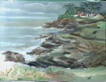

|
Chateau Eilen Donan |
Petit train de Glenfinnan |
Jardin au bassin |
Saint Marc la chapelle |
|
Bonneval |
dans l'ile |
 Sainte Marie |
 Ile de Sein |
|
peche en Vilaine Papy et Olivier |
Saint Marc les hauteurs |
Bonneval |